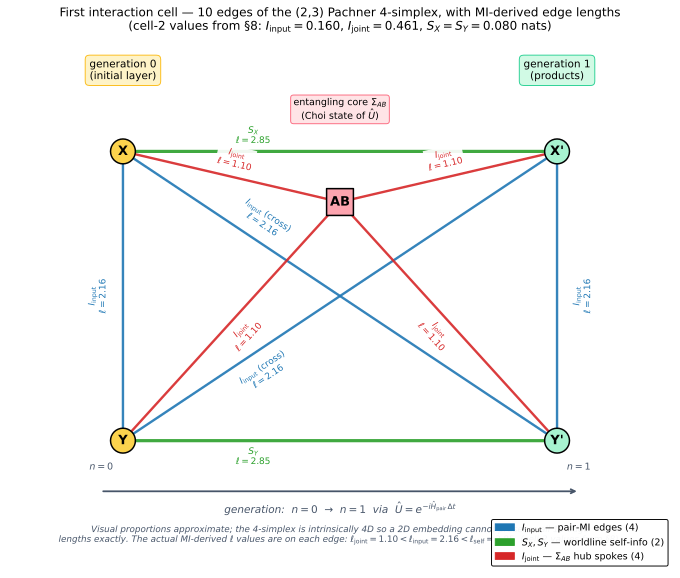
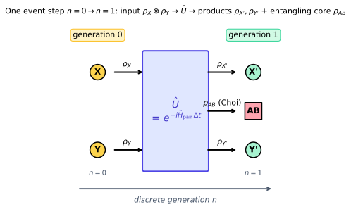
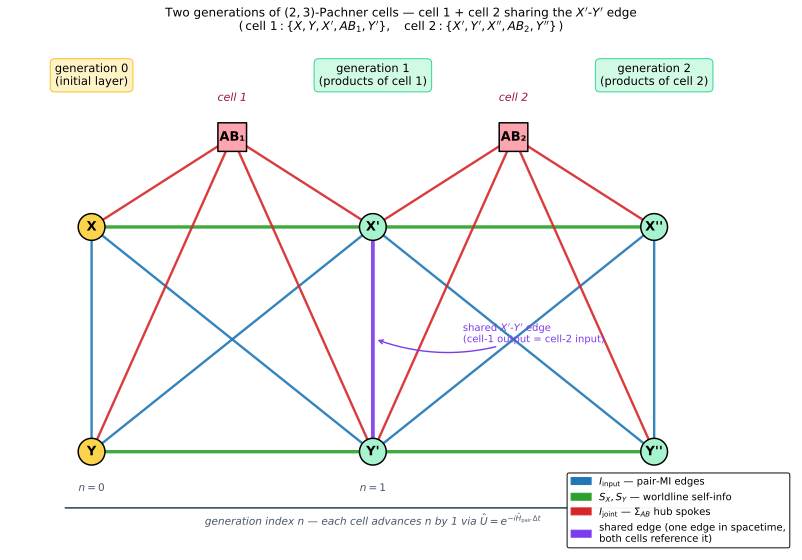
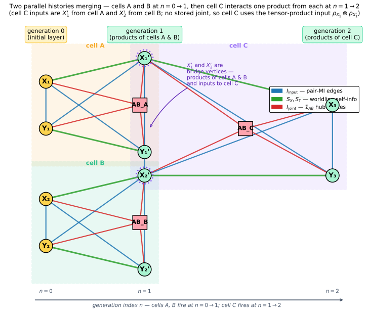

Charged Cartan — what the pair Hamiltonian must satisfy: a first-cell derivation¶
Status: design exploration Motivation: Experiment 05 found that \(J_s = 0\) gives peak \(D_S \approx 4.08\), indistinguishable from the v0.2 default’s \(T \to \infty\) asymptote. Tracing through the code revealed the initial states are charge eigenstates within their sector, which makes \(\hat{Q} \otimes \hat{Q}\) act as a global phase and means the dynamics may be degenerate at \(J_s = 0\). This document works the first interaction cell by hand. Rather than analysing one fixed Hamiltonian, it treats the per-event unitary generally — stating the requirements any pair Hamiltonian must satisfy for the construction’s features to come out right — and carries the v0.2 \(H_{\mathrm{pair}}\) throughout as the worked example. The first cell is the derivation tool: the two pathologies it exhibits (§4, §5) are what force the requirements (§7).
1. The question: which pair Hamiltonian?¶
Every interaction event applies a unitary \(\hat U\) to a pair of vertices. The construction has so far answered “which \(\hat U\)?” by picking a Hamiltonian and exponentiating — \(\hat U = \exp(-i\hat H\,\Delta t)\) — with \(\hat H\) a short sum of physically-motivated terms. The v0.2 design note is candid that this choice “is somewhat arbitrary — there are infinitely many ways to parameterise a 16×16 unitary, and the choice we make will affect every result.”
This document takes the opposite approach. Instead of analysing one \(\hat H\), it asks: what must any pair Hamiltonian satisfy for the construction to behave the way we need? The specific v0.2 \(H_{\mathrm{pair}}\) is kept throughout as a worked example — it is the thing the explicit arithmetic (§2.4–2.7, §9) and the diagrams are computed from — but the load-bearing content is the requirement list of §7, not the choice of terms.
1.1 Three layers — and what a requirement on \(\hat H\) can fix¶
A natural temptation is to ask for “the properties of \(\hat H\) that make the Standard Model come out.” Most of the Standard Model is not reachable that way. The construction’s physics splits into three layers, and only the middle one is “properties of \(\hat H\)”:
Kinematic layer — the per-vertex Hilbert space (the qudit), its charge grading, and the operators defined on it. The gauge group, the generation count, the representation content all live here: they are fixed by choosing the qudit, not by constraining \(\hat H\).
Hamiltonian layer — symmetry and structure properties of \(\hat H\) itself. These are the requirements this document derives (§7).
Emergent layer — what we want to come out of the full Monte Carlo: spectral dimension \(D_S = 4\), a baryon asymmetry. These are diagnostics and hypotheses, not things one can impose term-by-term.
Standard-Model feature |
Layer it lives in |
A requirement on \(\hat H\)? |
|---|---|---|
Gauge group, generation count |
Kinematic — the per-vertex qudit / representation content |
No — fixed by choosing \(\mathcal H_v\) |
A conserved charge |
Hamiltonian — \([\hat H, \hat Q_{\mathrm{tot}}] = 0\) |
Yes — R1 |
C / CP violation |
Hamiltonian — \([\hat H, \widehat{CP}] \neq 0\), controllably |
Yes — R4 |
A Hamiltonian-shaped geometry at all |
Hamiltonian — entangling, operator-Schmidt rank \(> 1\) |
Yes — R2 |
Chirality / parity violation |
Kinematic (L/R structure) + Hamiltonian (asymmetric coupling) |
Partly — needs \(\mathcal H_v\) enlarged |
CPT, spin–statistics |
Theorems — follow from Hermiticity + locality + a Lorentz-like structure |
Derived, not imposed |
Anomaly cancellation |
Kinematic — a consistency condition on representation content |
No |
Mass spectrum |
Hamiltonian form (a mass term) — but the values are inputs |
Form: yes — R6; values: no |
Baryon asymmetry, \(D_S = 4\) |
Emergent — outcomes of the full Monte Carlo |
No — these are the targets |
The honest consequence: the current per-vertex qudit is
4-dimensional — a \(\mathbb{Z}_2\) charge register times one spin-like
qubit. It cannot hold \(SU(3)_C \times SU(2)_L \times U(1)_Y\) with
three generations; that would need the kinematic layer enlarged far
beyond \(d = 4\). So this document does not claim a requirement
list sufficient for “the Standard Model.” It states necessary
conditions on \(\hat H\) for the structural features the present
framework can carry — a conserved charge, operator-level C/CP, a
baryogenesis channel, a mass term, and a geometry that the
Hamiltonian (not the bare lattice topology) actually shapes. This is
consistent with
from_schwinger_to_lattice.md,
whose glossary already states the construction is “Not. A
simulation of … the Standard Model.”
1.2 Roadmap¶
§2 sets up the kinematic layer and the general pair Hamiltonian, then introduces the worked-example \(H_{\mathrm{pair}}\). §3 builds the first interaction cell — note that nothing there uses the form of \(\hat H\), only that \(\hat U\) is a completely-positive trace-preserving (CPTP) map. §4 and §5 work two extreme inputs and find that on both, \(\hat U\) is inert — these are the two pathologies. §6 reads off the general engagement condition. §7 collects the requirements, each tied to the pathology that forces it. §8 lists the design knobs for satisfying them. §9 works a second cell (the worked example, propagating); §10 places it all in the path integral.
2. Setup: the kinematic layer and the pair Hamiltonian¶
2.1 The kinematic layer: per-vertex qudits¶
Each vertex carries a qudit state \(\rho_v\) — a density matrix on a \(d\)-dimensional Hilbert space \(\mathcal H_v\). The construction requires of \(\mathcal H_v\) only that it carry (i) a charge grading — a decomposition into sectors labelled by a conserved quantum number — and (ii) an internal register the dynamics can act on within a sector. Everything else about \(\mathcal H_v\) — how many sectors, how large the internal register, which gauge group it represents — is a free choice of the kinematic layer (§1.1).
The worked example fixes the smallest non-trivial choice: \(d = 4\), with \(\rho_v \in \mathbb{C}^{4 \times 4}\) on the basis
The first index is the charge sign (sector label, \(\pm\)); the second is an internal spin-like index (\(0/1\)). We treat them as two qubits, with the convention that the charge qubit is the outer slot in tensor products and the spin qubit is the inner slot. Compactly, \(\mathbb{C}^4 = \mathbb{C}^2_q \otimes \mathbb{C}^2_s\). A richer kinematic layer — colour, weak isospin, generations — would enlarge \(\mathcal H_v\), and is exactly the work §1.1 flags as not a Hamiltonian requirement.
2.2 Single-vertex operators¶
The kinematic layer must supply three kinds of single-vertex operator: a charge operator \(\hat Q\), internal generators, and a charge-conjugation \(\hat C\). In the worked example:
The charge operator is diagonal in \(\mathcal{B}\):
The spin operators are identity on the charge sector and Pauli on the spin sector:
In \(\mathcal{B}\) this means \(\sigma^x\) swaps \(\ket{+\,0}\leftrightarrow\ket{+\,1}\) and \(\ket{-\,0}\leftrightarrow\ket{-\,1}\) (and similarly for \(\sigma^y\) with \(\pm i\) phases). The CP-violation generator is the charge-flip:
which swaps \(\ket{+\,s}\leftrightarrow\ket{-\,s}\). (This is the only operator in \(H_{\mathrm{pair}}\) that does not commute with \(\hat{Q}\).)
2.3 The pair Hamiltonian: general form¶
An interaction couples two vertices \(A, B\). The per-event dynamics is a unitary \(\hat U = \exp(-i\,\hat H\,\Delta t)\) generated by a Hamiltonian \(\hat H\) on the bipartite space \(\mathcal H_{\mathrm{pair}} = \mathcal H_v \otimes \mathcal H_v\) (in the worked example, \(\mathbb{C}^4 \otimes \mathbb{C}^4 = \mathbb{C}^{16}\)).
The baseline assumed before any of §7’s requirements is just Hermiticity: \(\hat H = \hat H^\dagger\), so \(\hat U\) is unitary. Unitarity is what makes the total two-vertex entropy invariant, \(S(\rho_{AB}) = S(\rho_{XY})\) — a fact the per-edge MI machinery (§3.3, §4) leans on throughout. The one deliberate departure is the \(\Sigma_{AB}\) reduction (the 256→4-dim charge-basis projection at consumption), which is CPTP but not unitary; everything else inside a cell is unitary.
What §7 adds to “Hermitian” is a list of structural requirements — symmetries, couplings, locality. §2.4–2.7 work one \(\hat H\) that satisfies them; §7 says which of its features were load-bearing and which were a representative choice.
2.4 Worked example: the v0.2 \(H_{\mathrm{pair}}\)¶
For two vertices \(A, B\) (sites in \(\mathbb{C}^4 \otimes \mathbb{C}^4 = \mathbb{C}^{16}\)):
The per-event unitary is \(\hat{U} = \exp(-i\,\hat{H}_{\mathrm{pair}}\,\Delta t)\).
We work at the v0.2 defaults:
value |
|
|---|---|
\(J_c\) |
\(1.0\) |
\(J_s\) |
\(0.25\) |
\(\delta_m\) |
\(0.0\) |
\(\gamma_{\mathrm{CP}}\) |
\(0.0\) |
\(\Delta t\) |
\(0.25\) |
So \(\delta_m = \gamma_{\mathrm{CP}} = 0\) and
The four terms map one-to-one onto requirements R1, R2, R6 and R4 of §7 respectively — §7 says so explicitly, term by term.
2.5 Conservation and block structure¶
Suppose \(\hat H\) commutes with the total-charge operator \(\hat{Q}_{\mathrm{tot}} = \hat{Q}_A + \hat{Q}_B\) — this is requirement R1 (§7). Then \(\hat{U}\) is block-diagonal in the \(\hat{Q}_{\mathrm{tot}}\) eigenspaces. For the worked example this holds whenever \(\gamma_{\mathrm{CP}} = 0\):
\(Q_{\mathrm{tot}}\) |
sub-block |
dim |
|---|---|---|
\(+2\) |
\((+,+)\) |
\(4\) |
\(0\) |
\((+,-) \oplus (-,+)\) |
\(8\) |
\(-2\) |
\((-,-)\) |
\(4\) |
In each sub-block, \(\hat{Q}\otimes\hat{Q}\) acts as the constant \(q_A q_B \in \{+1, -1\}\) — i.e., \(\pm I_4\) on the sub-block. So inside a fixed-charge-pair sub-block, the only operator with non-trivial matrix structure is \(\sigma^x\sigma^x + \sigma^y\sigma^y\), which lives entirely in the spin sector.
2.6 The entangling core: \((XX + YY)\) in the spin sector¶
The term that does the entangling work — the worked example’s realisation of requirement R2 (§7) — is \((XX + YY)\). Acting on the \(\{\ket{00}, \ket{01}, \ket{10}, \ket{11}\}\) spin-pair basis:
so
That is: \((XX+YY)\) annihilates \(\ket{00}\) and \(\ket{11}\), and acts as \(2\,\sigma^x\) on the \(\{\ket{01}, \ket{10}\}\) subspace.
2.7 The unitary on a fixed-charge-pair sub-block¶
Take \(A = +\), \(B = -\) (the relevant block for an alternating-charge initial layer). On the 8-dimensional \((+,-)\) block:
Decomposing further into the spin sub-blocks:
On \(\ket{+\,0,\,-\,0}\) and \(\ket{+\,1,\,-\,1}\): \(H = -J_c\) (eigenvalue), so \(U = e^{+i J_c \Delta t}\).
On \(\{\ket{+\,0,\,-\,1},\,\ket{+\,1,\,-\,0}\}\): \(H = -J_c\,I + 2 J_s\,\sigma^x\), with eigenvalues \(-J_c \pm 2 J_s\) and eigenvectors \((\ket{+\,0,\,-\,1} \pm \ket{+\,1,\,-\,0})/\sqrt{2}\).
So inside this 2-dim spin sub-block,
At v0.2 defaults: \(2 J_s \Delta t = 0.125\,\mathrm{rad}\), so \(\cos(2 J_s \Delta t) \approx 0.99219\), \(\sin(2 J_s \Delta t) \approx 0.12467\).
That’s our complete picture of \(\hat{U}\) on the \((+,-)\) block:
with \(c = \cos(2J_s\Delta t)\), \(s = \sin(2J_s\Delta t)\). The \((-,+)\) block is identical under \(A \leftrightarrow B\).
3. The first interaction cell¶
Nothing in this section uses the form of \(\hat H\): the cell topology, its ten edges, and the MI assignments follow purely from \(\hat U\) being a CPTP map. The Hamiltonian re-enters only with the specific inputs of §4.
3.1 Generation 0 → generation 1¶
Two initial-layer vertices \(X, Y\) (the 0-simplices of generation 0) get picked from the frontier and interact via \(\hat U\). The construction produces three new generation-1 vertices — \(X', Y'\) (the worldline continuations of \(X, Y\)) and \(AB\) (the entangling- core \(\Sigma_{AB}\) that carries the Choi state of \(\hat U\)). The five vertices \(\{X, Y, X', AB, Y'\}\) together form a 4-simplex (a \((2,3)\)-Pachner cell) with \(\binom{5}{2} = 10\) edges:

The 10 edges fall into three classes by MI semantics:
2 worldline self-info edges (green): \(X{-}X'\) carries \(S_X = S(\rho_X)\), \(Y{-}Y'\) carries \(S_Y\). These connect each input to its own product.
4 hub-spoke edges (red): each connects a corner to the \(\Sigma_{AB}\) vertex. All four carry the post-event MI \(I_{\mathrm{joint}} = I(X' : Y')\) (the “joint” because it measures how much \(\hat U\) correlated the products).
4 pair-MI edges (blue): the input edge \(X{-}Y\) and three more \(X'{-}Y'\), \(X{-}Y'\), \(Y{-}X'\). All four carry MI = either \(I_{\mathrm{input}} = I(X{:}Y)\) (input joint) or \(I_{\mathrm{joint}} = I(X'{:}Y')\) (post-event joint).
The causal/temporal structure is cleanest in the auxiliary schematic:

3.2 The three product states¶
The new vertices’ density matrices come from the post-event joint:
\(\rho_{X'} = \mathrm{Tr}_Y\bigl(\hat{U}(\rho_X \otimes \rho_Y)\hat{U}^\dagger\bigr)\)
\(\rho_{Y'} = \mathrm{Tr}_X\bigl(\hat{U}(\rho_X \otimes \rho_Y)\hat{U}^\dagger\bigr)\)
\(\rho_{AB} =\) the \(\Sigma_{AB}\) Choi-state vertex carrying \(J(\hat{U})\) (post-#16)
Each edge gets a mutual information \(I_e\), which becomes an edge length \(\ell_e = -\ln(I_e / I_{\max})\) (with \(I_{\max} = 2 \ln 2\)) and squared length \(\ell_e^2 = \mathrm{signedSquaredLength}(\ell_e, \text{spacelike})\).
3.3 The 10 MI assignments¶
From src/simulations/InteractionSimulation.cpp (lines 786–795):
edge |
endpoints |
MI value |
meaning |
|---|---|---|---|
1 |
\(X\)–\(Y\) |
\(I_{\mathrm{input}}\) |
input spatial |
2 |
\(X\)–\(X'\) |
\(S_X\) |
worldline self-info |
3 |
\(Y\)–\(Y'\) |
\(S_Y\) |
worldline self-info |
4 |
\(X\)–\(AB\) |
\(I_{\mathrm{joint}}\) |
hub spoke |
5 |
\(Y\)–\(AB\) |
\(I_{\mathrm{joint}}\) |
hub spoke |
6 |
\(X'\)–\(AB\) |
\(I_{\mathrm{joint}}\) |
hub spoke |
7 |
\(AB\)–\(Y'\) |
\(I_{\mathrm{joint}}\) |
hub spoke |
8 |
\(X'\)–\(Y'\) |
\(I_{\mathrm{input}}\) |
cross-pair |
9 |
\(X\)–\(Y'\) |
\(I_{\mathrm{input}}\) |
cross-pair |
10 |
\(Y\)–\(X'\) |
\(I_{\mathrm{input}}\) |
cross-pair |
where
\(S_X = S(\rho_X)\), \(S_Y = S(\rho_Y)\) — input marginal entropies
\(I_{\mathrm{input}} = I(X : Y) = S_X + S_Y - S(\rho_{XY})\)
\(I_{\mathrm{joint}} = I(X' : Y')\) in the post- \(\hat{U}\) joint \(\rho_{AB} = \hat{U}\rho_{XY}\hat{U}^\dagger\)
By unitary invariance of total entropy, \(S(\rho_{AB}) = S(\rho_{XY})\), so the question of \(I_{\mathrm{joint}}\) is entirely about how \(\hat{U}\) rearranges marginal entropies between \(X\) and \(Y\).
4. Case A — the eigenstate trap (concentrated information)¶
Take a charge-Bell input
4.1 Marginals and entropies¶
\(\rho_{XY} = \ket{\psi}\bra{\psi}\), pure, so \(S(\rho_{XY}) = 0\). Trace out \(Y\):
Off-diagonals would require \(\ket{+\,0, y}\bra{-\,0, y}\) pairs with matching \(y\) — they’re absent because in \(\ket{\psi}\) the \(A\)-side \(\ket{+\,0}\) correlates with \(B\)-side \(\ket{-\,0}\) and vice versa.
\(S(\rho_X^{(A)}) = \ln 2\) (one-bit charge entropy). Similarly \(S(\rho_Y^{(A)}) = \ln 2\).
So the initial MI equals the maximum a 2-dim charge-bit can carry — \(\ket{\psi_{XY}^{(A)}}\) is maximally entangled in the charge register and trivial in the spin register (\(s = 0\) frozen).
4.2 Action of \(\hat U\)¶
The two basis states \(\ket{+\,0,\,-\,0}\) and \(\ket{-\,0,\,+\,0}\) live in the \((+,-)\) and \((-,+)\) blocks respectively. From the boxed expression above, both get the same global phase \(e^{+i J_c \Delta t}\):
The \((XX+YY)\) term contributes nothing because \(\ket{\psi^{(A)}}\) sits entirely on the \(\ket{00}\) spin sector, which is annihilated by \(XX+YY\).
So \(\rho_{AB} = \rho_{XY}\) (the global phase cancels in \(\rho\)), and:
4.3 Per-edge MI¶
edge |
\(I_e\) |
\(I_e / I_{\max}\) |
\(\ell_e = -\ln(I_e/I_{\max})\) |
|---|---|---|---|
\(X\)–\(Y\) |
\(2\ln 2\) |
\(1.0\) |
\(0\) |
\(X\)–\(X'\) |
\(\ln 2\) |
\(0.5\) |
\(\ln 2 \approx 0.693\) |
\(Y\)–\(Y'\) |
\(\ln 2\) |
\(0.5\) |
\(\ln 2\) |
4 hub spokes |
\(2\ln 2\) each |
\(1.0\) |
\(0\) |
3 cross-pair |
\(2\ln 2\) each |
\(1.0\) |
\(0\) |
(Recall \(I_{\max} = 2\ln 2\).)
So 8 of the 10 edges have length 0 (saturated at \(I_{\max}\)); the other 2 are the worldline-self edges at \(\ell = \ln 2\). The new cell has a near-degenerate geometry — most edges are “as short as possible” — and the Regge action \(\Delta S\) is determined almost entirely by the two worldline edges.
4.4 What happened dynamically¶
Nothing. \(\hat U\) acted as the identity (up to global phase) on this input. The cell has rich MI structure, but all of it was already present in the input. The Hamiltonian did not generate any of it.
This is the eigenstate trap: \(\ket{\psi^{(A)}}\) is a simultaneous eigenstate of \(\hat Q\otimes\hat Q\) (eigenvalue \(-1\), in both blocks) and of \(XX+YY\) (eigenvalue \(0\)), hence of \(\hat H_{\mathrm{pair}}\) itself. Eigenstates pick up phases under \(\hat U\); their MI structure is rigid. In requirement terms (§7): this is the pathology R3 rules out — \(\hat U\) engages only on inputs that are not eigenstates of \(\hat H\).
5. Case B — the maximally-mixed trap (distributed information)¶
Now take
i.e., the maximally mixed state on the \(+\) charge sector (\(P_+\) is the sector projector). Similarly \(\rho_Y^{(B)} = \tfrac{1}{2} P_-\). The joint input is a product:
This idealises the actual code path (which uses a random rank-≤2
state in each sector, see src/simulations/InteractionSimulation.cpp:495)
— maximally distributed information within each sector, no
sector-superposition, no cross-vertex correlation.
5.1 Marginals and entropies¶
\(S(\rho_X^{(B)}) = S(\rho_Y^{(B)}) = \ln 2\) (a maximally-mixed state on a 2-dim subspace).
\(S(\rho_{XY}^{(B)}) = S(\rho_X^{(B)}) + S(\rho_Y^{(B)}) = 2\ln 2\) (product state, additive entropy).
Two pure-distributed-uncorrelated systems carry the same per-vertex entropy (\(\ln 2\) each) as the Bell case, but none of it is shared — hence \(I = 0\).
5.2 Action of \(\hat U\)¶
\(\rho_{XY}^{(B)} = \tfrac{1}{4} P_+ \otimes P_-\) sits entirely in the \((+,-)\) block. Within that block:
— the maximally mixed state on the 4-dim \((+,-)\) block. Any unitary commutes with the identity:
So \(\rho_{AB} = \rho_{XY}^{(B)}\), exactly the input. \(\hat U\) acted invisibly.
Therefore:
5.3 Per-edge MI¶
edge |
\(I_e\) |
\(\ell_e = -\ln(I_e/I_{\max})\) |
|---|---|---|
\(X\)–\(Y\) |
\(0\) |
\(-\ln \varepsilon_I\) (clamped) |
\(X\)–\(X'\) |
\(\ln 2\) |
\(\ln 2 \approx 0.693\) |
\(Y\)–\(Y'\) |
\(\ln 2\) |
\(\ln 2\) |
4 hub spokes |
\(0\) each |
clamped |
3 cross-pair |
\(0\) each |
clamped |
With the simulator’s \(\varepsilon_I = 10^{-10}\), the clamp is \(\ell = -\ln(10^{-10}) = 10 \ln 10 \approx 23\).
8 of 10 edges are saturated at the maximum length (the opposite extreme from Case A’s saturation at length 0). Only the two worldline-self edges, with \(\ell = \ln 2\), carry any geometric information.
5.4 What happened dynamically¶
Again, nothing. \(\hat U\) commutes with the maximally-mixed state on the active sub-block — every unitary does. The Hamiltonian contributed neither phase structure nor entanglement. Again in requirement terms: this is the second half of R3 — inputs must not be maximally mixed on the active sub-block, or every unitary is inert regardless of \(\hat H\).
6. When does the Hamiltonian engage?¶
Both extremes — pure Bell-eigenstate input and maximally-mixed product input — leave \(\hat U\) inert. The Hamiltonian engages only in the middle: inputs that are simultaneously
Not eigenstates of \(\hat H\) (otherwise \(\hat U\) is a global phase), and
Not maximally mixed on the active sub-block (otherwise \(\hat U I \hat U^\dagger = I\)).
These two conditions are requirement R3 of §7; the rest of this section makes them quantitative.
Concretely, “engagement” requires coherences in the spin index within an allowed sub-block: e.g., off-diagonal terms \(\ket{+\,0,\,-\,1}\bra{+\,1,\,-\,0}\) or pure-basis-state inputs like \(\ket{+\,0,\,-\,1}\) that the \((XX+YY)\) rotor can mix with \(\ket{+\,1,\,-\,0}\).
A clean intermediate sanity check: take \(\rho_{XY} = \ket{+\,0,\,-\,1}\bra{+\,0,\,-\,1}\) (pure product, basis state, not eigenstate). Then
with \(c \approx 0.992\), \(s \approx 0.125\). Tracing out \(Y\):
\(S(\rho_X') = -[0.984\ln 0.984 + 0.016\ln 0.016] \approx 0.080\) nats. \(I^{}_{\mathrm{joint}} = 2 \times 0.080 \approx 0.16\) nats — modest but nonzero. This is the actual regime the code occupies (random rank-2 in-sector inputs sit between this and Case B): some MI gets generated, but at v0.2 defaults the rotation angle \(2 J_s \Delta t = 0.125\) rad keeps it small.
6.1 Why the \(J_s = 0\) sweep result was suspicious¶
At \(J_s = 0\) exactly, the \((XX+YY)\) term vanishes and the only remaining Hamiltonian term, \(J_c\,\hat Q\otimes\hat Q\), is constant on each fixed-charge-pair sub-block (eigenvalue \(\pm 1\)). So \(\hat U|_{J_s=0}\) is a global phase on every sub-block — any charge-eigenstate input is an eigenstate of \(\hat U|_{J_s=0}\), and \(I_{\mathrm{joint}} = I_{\mathrm{input}}\) identically.
Since the code’s initial inputs are independent random states in each sector (\(I_{\mathrm{input}} = 0\)), at \(J_s = 0\) every interaction generates zero new MI. Every edge except the two worldline-self ones gets clamped at \(\ell = -\ln \varepsilon_I\). The peak \(D_S \approx 4.08\) reported in Experiment 05 reflects the bare topology of the (2,3)-Pachner-stacked cell complex with degenerate edge weights — not a Hamiltonian-shaped geometry. Experiment 05’s finding “J_s = 0 is the H_DS4 working point” should be downgraded until the dynamics-on regime is also checked at the same lattice size. In requirement terms: at \(J_s = 0\) the worked example fails R2 (the entangling core vanishes), so the geometry it samples is the bare topological prior.
7. The requirements¶
§4–§6 worked the first cell and found a sharp lesson: on the two extreme inputs \(\hat U\) does nothing, and the cell’s geometry is then independent of \(\hat H\) entirely. Generalising that lesson — and the conservation argument of §2.5, the entangling argument of §2.6, and the locality built into §3 — gives the list below. Each requirement is stated as a property of \(\hat H\) (or, for R3, of \(\hat H\) together with the input-state class), the structural feature it secures, the pathology that appears if it is dropped, and how the worked-example \(H_{\mathrm{pair}}\) realises it.
A note on what kind of list this is. These are necessary conditions, not a sufficient recipe: satisfying R1–R6 does not guarantee \(D_S = 4\) or a baryon asymmetry — those are emergent (§1.1, third layer). The requirements make the dynamics capable of producing them; whether it does is what the Monte Carlo measures. R2, R3 and R5 secure the geometric substrate (that there is a Hamiltonian-shaped, causal spacetime at all); R1, R4 and R6 secure structural matter features (charge, CP-violation/baryogenesis, mass).
R1 — Charge gradeability and conservation¶
Property. The kinematic layer supplies a charge operator \(\hat Q\), and \(\hat H\) commutes with the total charge \(\hat Q_{\mathrm{tot}} = \hat Q_A + \hat Q_B\) — exactly, except for one explicitly-labelled term whose magnitude is controlled (see R4).
Secures. A conserved \(U(1)\)-type quantum number: particle / antiparticle sectors, the block-diagonal structure of §2.5, and the eligibility logic of the move set.
Pathology if dropped. If \(\hat H\) mixes charge sectors uncontrollably, “charge” is no longer a quantum number; the block decomposition that the entire sub-block analysis (§2.5–2.7, §4–§6) rests on is lost, and there is no sharp \(\hat Q\) to read out per vertex.
In the worked example. \(J_c\,\hat Q\!\otimes\!\hat Q\), \(J_s(XX+YY)\) and \(\delta_m(\hat Q_A + \hat Q_B)\) all commute with \(\hat Q_{\mathrm{tot}}\); only the \(\gamma_{\mathrm{CP}}\) term does not — that is R4.
R2 — Genuine entangling content¶
Property. \(\hat H\) has a genuinely two-body part — it is not of the form \(\hat H_A \otimes I + I \otimes \hat H_B\) — so \(\hat U\) has operator-Schmidt rank \(> 1\) on the active sub-block (it is not a product \(K_A \otimes K_B\) of local rotations).
Secures. That mutual information is generated at all. Edge lengths are \(\ell = -\ln(I/I_{\max})\); if \(\hat U\) creates no correlation there is nothing for the geometry to be made of. This is the van Raamsdonk hinge the whole construction stands on.
Pathology if dropped. A rank-1 \(\hat U = K_A \otimes K_B\) rotates each vertex locally and leaves \(I_{\mathrm{joint}} = I_{\mathrm{input}}\) identically. The cell complex then carries only its bare combinatorial topology — exactly the degenerate-geometry outcome described in §6.1 for \(J_s = 0\).
In the worked example. The \(J_s(XX+YY)\) term is the entangling core; the operator-Schmidt rank of \(\hat U\) collapses to 1 as \(J_s \to 0\).
R3 — Non-degeneracy on the input class (engagement)¶
Property. A joint condition on \(\hat H\) and the input-state preparation: the construction’s actual input states must be neither eigenstates of \(\hat H\) nor maximally mixed on the active sub-block. Equivalently, \(\hat H\) must carry matrix elements off-diagonal in the basis the inputs are (near-)diagonal in.
Secures. That \(\hat U\) does dynamical work — generates new correlation — so the per-event action increment \(\Delta S_n\) depends on the chosen pair, and the Metropolis sampler can select among quantum-distinct geometries (§10).
Pathology if dropped. The two traps of §4 and §5: an eigenstate input (Case A) gets only a global phase; a maximally-mixed input (Case B) satisfies \(\hat U\,\rho\,\hat U^\dagger = \rho\). Either way \(I_{\mathrm{joint}} = I_{\mathrm{input}}\) and the geometry is Hamiltonian-independent.
In the worked example. At v0.2 defaults the inputs are charge eigenstates within a sector and the random in-sector state is near-maximally-mixed — the worked example sits close to both traps at once, which is why its engagement is weak and why §8 is mostly about moving the inputs, not the Hamiltonian. R3 is the subtlest requirement precisely because it is not a property of \(\hat H\) alone.
R4 — Controlled C / CP structure¶
Property. The kinematic layer supplies a charge-conjugation operator \(\hat C\); \(\hat H\) has a CP-respecting part and a CP-breaking part whose magnitude is a tunable parameter. CP violation is the structural statement \([\hat U, \widehat{CP}] \neq 0\), not an external numerical bias.
Secures. Sakharov condition (ii); a baryogenesis channel that is dialable from exactly CP-symmetric to strongly-violating — the operator-level C/CP the v0.2 qudit basis was introduced to make possible.
Pathology if dropped. If CP cannot be broken, no matter– antimatter asymmetry can form. If it is broken uncontrollably — with no symmetric limit — then charge is not even approximately conserved and R1’s block structure never holds.
In the worked example. \(\gamma_{\mathrm{CP}}(\hat C_A + \hat C_B)\), the only term that fails to commute with \(\hat Q\); \(\gamma_{\mathrm{CP}} = 0\) is the exactly-CP-symmetric limit (and the v0.2 default analysed here).
R5 — Two-body locality¶
Property. \(\hat H\) couples one pair of vertices at a time: no \(k\)-body terms with \(k > 2\).
Secures. That each interact is a local (2,3) Pachner move, so
the complex grows by local moves with a well-defined causal /
simplicial structure, and the Regge action is a sum of local
increments \(\Delta S_n\) (§10).
Pathology if dropped. A non-local \(\hat H\) — e.g. the Schwinger
model’s long-range Coulomb \(\sigma^z_i \sigma^z_j\) term — cannot be
written as a per-pair \(\hat U\); there is no per-event unitary to
attach to a (2,3) cell. This is exactly the truncation
from_schwinger_to_lattice.md
documents, and its price is the gauge / Coulomb channel, deferred to
v0.3’s photon mediation.
In the worked example. Every term of \(H_{\mathrm{pair}}\) is two-body by construction; the long-range gauge force is deliberately absent.
R6 — A tunable mass / gap term¶
Property. \(\hat H\) contains a tunable single-site diagonal term that splits the energies of the charge (and, ideally, spin) sectors.
Secures. Dynamically distinguishable sectors and the possibility of bound-state / mass-shell structure — the role the staggered mass plays in the Schwinger fragment.
Pathology if dropped. With no energy splitting the sectors are degenerate; certain superpositions never dephase, and the model loses the knob a mass hierarchy would be built on.
In the worked example. \(\delta_m(\hat Q_A + \hat Q_B)\); note \(\delta_m = 0\) at the v0.2 default, so the worked example runs in the gapless limit.
What is not a requirement on \(\hat H\)¶
For contrast — and to keep the list honest — the following are not on it, by §1.1’s layering: the gauge group and generation count (kinematic — choose \(\mathcal H_v\)); anomaly cancellation (a consistency condition on representation content); CPT and spin–statistics (theorems that follow from Hermiticity, locality and a Lorentz-like structure, rather than axioms one imposes); and the actual mass and mixing values (inputs, not consequences of the form of \(\hat H\)).
8. Design knobs: satisfying the requirements¶
The worked example \(H_{\mathrm{pair}}\) already satisfies R1, R2, R4, R5 and R6 by construction — the four terms were chosen for exactly those roles. The requirement that bites is R3 (engagement): §6 showed the worked example sits close to both traps at once. The six knobs below are the ways to satisfy R3 more strongly — some by changing the input-state class, some by changing \(\hat H\) itself (which also touches R2 and R6). They are listed in increasing order of how disruptive they are to the current v0.2 picture.
8.1 Lower initial-state entropy¶
The current buildInitialLayer produces random rank-\(\leq 2\) mixed
states in each sector by sampling 4×4 complex Gaussians, projecting
to the sector, and trace-normalising. The result has typical
entropy \(\sim 0.5\,\ln 2\), which puts it most of the way to
maximally mixed in the sector — too close to Case B for \(\hat U\) to
move it strongly.
Try: project onto a random pure state in the sector instead
(rank 1, \(S = 0\)). This makes each vertex maximally distinguishable
in its sector and gives \(\hat U\) full purchase via \((XX+YY)\)
rotation. Cost: trivial code change in
buildInitialLayer.
Interpretation: replaces “random spinor in this charge sector” (thermal-ish vacuum) with “definite single-particle state”.
8.2 Charge-sector superposition inputs¶
Lift the off-sector zeroing in buildInitialLayer. The vertex state
then has support on both charge sectors, with
\(\bra{+}\rho\ket{-}\) off-diagonal terms. Now \(\hat Q\otimes\hat Q\)
is no longer constant — its \(\pm 1\) eigenvalues mix coherently
across blocks, and the input is no longer an eigenstate. Bell-like
entanglement starts being generated.
Interpretation: relaxes the strict sector-confinement convention. Physically, this is the “no longer in a definite charge eigenstate” regime — appropriate if we want a quantum number (charge) to be conserved on average but not exactly in the wave function. Tradeoff: \(Q\)-conservation as a sharp invariant is lost in the input; it would still be preserved as an expectation value.
8.3 Increase \(\Delta t\)¶
The rotation angle in \((XX+YY)\) is \(2 J_s \Delta t = 0.125\) rad at defaults. Doubling \(\Delta t\) to \(0.5\) gives angle \(0.25\) rad (\(\approx 14^\circ\), \(\sin \approx 0.247\)) — about 4× more MI generated per event. Cost: nothing, just a config value.
Interpretation: longer “exposure” per interaction event. The unitary is still the same form but takes a bigger Trotter step in the underlying continuous-time evolution.
8.4 Add a spin–charge cross term¶
The current \(H_{\mathrm{pair}}\) has no operator that couples the spin and charge indices on the same vertex. So a vertex in a charge eigenstate stays in that charge eigenstate, and the spin register evolves only via the bipartite \((XX+YY)\). Adding a single- site term
i.e., a spin–charge correlated flip on each vertex, breaks both charge conservation and the charge/spin block independence. Inputs that started as charge eigenstates develop charge-coherences under \(\hat U\), and \((XX+YY)\) then bipartitely entangles in the wider state space.
Interpretation: spin–orbit-like coupling. The physical analog is a term that mixes spin and “internal flavor” on each vertex — making the qudit basis less reducible than a tensor product.
8.5 Replace \((XX+YY)\) with a full Cartan entangler¶
The general SU(4) Cartan entangling content of any pair unitary is \(\exp(i (c_x XX + c_y YY + c_z ZZ))\), with three independent coupling constants. The current \(H_{\mathrm{pair}}\) uses only the \(c_x = c_y = J_s\) slice (an XXZ-like coupling with \(c_z = 0\)). The \(ZZ\) term — diagonal in the spin index — would lift the \(\ket{00}/\ket{11}\) degeneracy that currently makes those states \((XX+YY)\)-stationary.
Interpretation: extends the spin-sector dynamics from “XY model” to “XXZ model” (or fully Heisenberg). Standard in lattice spin physics; the additional coupling is just one more knob.
8.6 Time-dependent / kicked \(\hat U\)¶
Currently \(\hat U\) is the same matrix at every event. Allowing a slowly varying \(\hat U\) (e.g., a Floquet drive where \(J_s, J_c\) modulate with cell index) would prevent the input from settling into any eigenstate of a single \(\hat U\).
Interpretation: an open quantum system whose environment evolves. Most ambitious; touches the autonomy of \(H_{\mathrm{pair}}\) as a single fundamental object.
8.7 Recommendations¶
In rough order of “do this first”:
(§8.1) Random pure states in each sector, instead of random mixed. Trivial code change; immediately distinguishes the \(J_s = 0\) inert regime from non-trivial dynamics. Predicted: peak \(D_S\) at \(J_s = 0\) should rise above 4.08 once the inputs aren’t maximally distributable, because the cross-pair edges will now carry non-zero \(I_{\mathrm{joint}}\).
(§8.3) Increase \(\Delta t\) to \(\sim 0.5\) in a control run, see whether peak \(D_S\) moves systematically.
(§8.2) A separate experiment with sector-superposition inputs. This is the cleanest way to actually engage \(\hat Q\otimes\hat Q\), which is currently almost entirely cosmetic at the chosen initial conditions.
Each of (§8.1)–(§8.3) is a one-line config change or a few-line
patch to buildInitialLayer. They can be run as small sweeps
against the same N=8, T=2500 lattice the H-parameter sweep used,
and the resulting \(D_S\) surfaces should be qualitatively different
from the current ones — that would mean we’ve moved out of the
“dynamics inert” regime and into “Hamiltonian-shaped geometry.”
9. A second interaction event¶
To see how state propagates through the history and how the Regge action accumulates, work the next event. After cell 1 has fired on inputs \(X, Y\) producing \(X', Y', AB_1\), the frontier contains \(\{X', Y', AB_1\}\) plus whatever initial-layer vertices weren’t consumed.
We’ll work the “intermediate engagement” case from §6 — pure basis-state inputs, where \(\hat U\) actually does something non-trivial — so the propagation is visible. Cell 1 inputs:
9.1 Cell 1 outputs (recap of §6’s mid-engagement case)¶
From the boxed action on the \((+,-)\) block:
with \(c = \cos(2 J_s \Delta t) \approx 0.99219\), \(s = \sin(2 J_s \Delta t) \approx 0.12467\).
The post-event joint is pure: \(\rho_{AB_1} = \ket{\psi_1}\bra{\psi_1}\). Marginals:
with \(c^2 \approx 0.9844\), \(s^2 \approx 0.0156\). Per-vertex entropies:
And \(I^{(1)}_{\mathrm{joint}} = 2 S(\rho_{X'}^{(1)}) \approx 0.160\) nats (since \(\rho_{AB_1}\) is pure).
The joint \(\rho_{AB_1}\) is also stored as quditJointOf_[(X', Y')]
(post-#16 Choi path) and carries the full coherence:
in the \(\{\ket{+\,0,\,-\,1},\,\ket{+\,0,\,-\,0},\,\ket{+\,1,\,-\,1},\,\ket{+\,1,\,-\,0}\}\) basis (filling the active \((+,-)\) block, zero elsewhere).
9.2 Cell 2 setup — reuse the two products¶
The most informative second event reuses both products of cell 1 together: \(X^{(2)} = X'\) from cell 1, \(Y^{(2)} = Y'\) from cell 1. The two cells then share the \(X'\)-\(Y'\) edge — one physical edge in the spacetime, referenced by both cells’ MI tables:

The input joint to cell 2 is then not a product of marginals — it’s the stored \(\rho_{AB_1}\):
This is the case the v0.2 code distinguishes (via quditJointOf_):
when two frontier vertices share an interaction history, the
simulator uses the stored 16-dim joint, not the tensor product
of marginals. The path-integral picture below makes this matter.
9.3 \(\hat U\) on cell 2¶
We’re applying \(\hat U\) to a state that is itself the output of \(\hat U\) acting on \(\ket{+\,0,\,-\,1}\) at cell 1. Stacking:
In the \(\{\ket{+\,0,\,-\,1},\,\ket{+\,1,\,-\,0}\}\) 2-dim sub-block, \(\hat U\) acts as \(e^{+i J_c \Delta t}\,R\) where
Stacking is a rotation-angle doubling:
At v0.2 defaults: \(4 J_s \Delta t = 0.25\) rad, so \(\cos(0.25) \approx 0.96891\), \(\sin(0.25) \approx 0.24740\).
Cell 2’s output:
Marginals of \(\rho_{AB_2} = \ket{\psi_2}\bra{\psi_2}\):
with \(\cos^2 \approx 0.9388\), \(\sin^2 \approx 0.0612\).
\(S(\rho_{X''}^{(2)}) \approx 0.230\) nats. And \(I^{(2)}_{\mathrm{joint}} \approx 0.46\) nats — about 2.9× larger than cell 1’s \(I^{(1)}_{\mathrm{joint}}\).
9.4 Per-edge MI in cell 2¶
The inputs to cell 2 are not maximally mixed, and the input joint already carries MI \(I^{(1)}_{\mathrm{joint}} \approx 0.161\) nats from cell 1. So for the new cell’s 10 edges:
edge |
\(I_e\) (nats) |
\(\ell_e = -\ln(I_e/I_{\max})\) |
|---|---|---|
\(X^{(2)}\)–\(Y^{(2)}\) (= \(X'\)–\(Y'\) of cell 1) |
\(0.160\) |
\(2.155\) |
\(X^{(2)}\)–\(X^{(2)\prime}\) |
\(S(\rho_{X^{(2)}}) = 0.080\) |
\(2.852\) |
\(Y^{(2)}\)–\(Y^{(2)\prime}\) |
\(S(\rho_{Y^{(2)}}) = 0.080\) |
\(2.852\) |
4 hub spokes (\(AB_2\)) |
\(I^{(2)}_{\mathrm{joint}} \approx 0.461\) |
\(1.102\) |
3 cross-pair |
\(I^{(2)}_{\mathrm{input}} = 0.160\) |
\(2.155\) |
(With \(I_{\max} = 2 \ln 2 \approx 1.386\).)
The geometry of cell 2 is richer than cell 1’s:
Cell 1 had only the 2 worldline edges at finite length (\(\ln 2\)); the other 8 edges were clamped at the \(\varepsilon_I\) floor.
Cell 2 has all 10 edges at finite, distinct lengths, because the input is now correlated and U has rotated further.
9.5 What the second cell taught us¶
Stacking \(\hat U\) doubles the rotation angle in the active spin sub-block. So if we want richer per-event dynamics, we can either (a) make \(J_s \Delta t\) larger (§8.3) or (b) chain events through the same worldlines so the angle accumulates.
Cell 2 inherits cell 1’s joint state, not just marginals. This is exactly the v0.2 / #16 storage convention paying off —
quditJointOf_[(X', Y')]was set in cell 1 and is read here.The MI signal compounds. \(I_{\mathrm{joint}}\) at cell 2 was ≈ 3× cell 1’s, because cell 2 starts from an entangled input rather than a product input.
If we’d worked Case A (Bell-like input) or Case B (max-mixed input) instead, \(\hat U^2\) would still be a global phase or trivial, and cell 2 would inherit cell 1’s degeneracy. The “intermediate engagement” regime is the one where the history does any work.
9.6 Cross-history merging — two cells fire in parallel, then their products interact¶
The chained picture above (cells 1 and 2 along a single pair of worldlines) is the cleanest analytical case, but it’s also a special topology. In the actual simulation the frontier holds many vertices, and most events fire on pairs whose ancestries don’t share a stored joint — typically because the two inputs came from different prior cells, or one is fresh from the initial layer. That’s the “cross-history merging” topology:

At cell C, since the two inputs \(X_1'\) and \(X_2'\) don’t share an
interaction history, there is no entry in quditJointOf_ for
the pair \((X_1', X_2')\). The simulator’s
quditJointStateFor(X_1', X_2') then falls back to the
tensor-product input
losing whatever quantum coherence each marginal kept internally to its parent cell. Concretely:
Cell A correlated \(X_1'\) with \(Y_1'\) (and with \(AB_A\)) but not with anything from cell B.
Cell B correlated \(X_2'\) with \(Y_2'\) (and with \(AB_B\)) but not with anything from cell A.
At cell C, \(X_1'\) and \(X_2'\) are uncorrelated → \(I_{\mathrm{input}}^{(C)} = 0\) identically.
So cell C is in the regime of Case B from the input-MI side, even though its marginals have nonzero entropy (inherited from the prior cells’ dynamics).
This is the typical topology in the simulation: most pairs the random frontier-picker chooses share no prior interaction, so most events get product-input joints and zero \(I_{\mathrm{input}}\). The chained / shared-joint topology of §9.1–§9.5 is the exception, and the only place where the per-event MI output can compound by more than the worldline-self contribution.
10. How this fits into the path integral¶
The Monte Carlo samples a partition function
where each history \(h\) is a sequence of accepted moves \((m_1, m_2, \dots, m_T)\) that grew the initial layer into a final cell complex \(\mathcal{K}_T\). The equilibrium distribution is
10.1 What’s summed over¶
The configuration space is the set of growable cell complexes
reachable from the initial layer by a sequence of interact
(and optionally annihilate, pairCreate) moves. Crucially:
\(\mathcal K_T\) is a 4-dimensional simplicial complex of (2,3) cells, not a continuum metric.
Each cell \(c\) contributes its 10 edges; each edge \(e\) has a length \(\ell_e\) determined by the MI of the pair-state that the cell was constructed from (§3, §4.3, §5.3, §9.4).
The action \(S_{\mathrm{Regge}} = \sum_H A_H \varepsilon_H\) is a function of those edge lengths via the hinge areas and deficit angles.
So \(S\) is not a separate quantum-mechanical functional layered on top of a fixed metric. The edge lengths, hence \(A_H\) and \(\varepsilon_H\), are outputs of the quantum dynamics (\(\hat U \rho \hat U^\dagger \rightarrow\) MI \(\rightarrow \ell\)). The path integral is over histories that jointly specify the geometry and the quantum state evolution.
10.2 Conditional structure of the Boltzmann weight¶
The cumulative action telescopes:
where \(\Delta S_n\) is the new hinge contribution from event \(n\) — i.e., the action of the hinges added by cell \(n\) that weren’t in \(\mathcal K_{n-1}\). From §3, \(\Delta S_n\) is computed from the 10 edge lengths of cell \(n\), which depend on:
The marginal states \(\rho_{X_n}, \rho_{Y_n}\) of the chosen inputs at step \(n\);
The stored input joint \(\rho_{X_n Y_n}\), if any, propagated forward from earlier events through
quditJointOf_.
So the Boltzmann weight factorises along the history:
with the \(n\)-th factor conditional on the quantum state at step \(n-1\). Each accepted move multiplicatively reweights the history.
10.3 The Metropolis sampler¶
The Metropolis-Hastings acceptance for proposed move \(m_n\) is
where the proposal-probability prefactor handles the asymmetry of “propose this cell” vs “un-propose it”. The detailed-balance condition ensures that as \(T \to \infty\), samples are drawn from \(\pi(h) \propto \exp(-\beta S_{\mathrm{Regge}})\) as desired.
At \(\beta \to 0\), the action is irrelevant and any topologically legal move is accepted — the chain wanders freely in configuration space. At large \(\beta\), the chain freezes near the action minima. The H_DS4 hypothesis (§3 of the v0.2 design) is the claim that some \(\beta\) exists where the equilibrium ensemble’s geometry has emergent spectral dimension \(D_S = 4\).
Primal vs. dual lattice. The Metropolis weight uses the Regge action \(S_{\mathrm{Regge}}\), which lives on the primal complex \(\mathcal K_T\) — areas and deficit angles of its hinges — and each \(\Delta S_n\) is local to the cell just added. The dual lattice never enters a move’s accept/reject. The spectral dimension is a separate observable: exactly as in CDT (Ambjørn, Jurkiewicz, Loll, Reconstructing the Universe, eq. 24 — a random walk hopping between four-simplices, \(1/5\) to each of its five neighbours), \(D_S\) is measured by heat-kernel diffusion on the dual lattice, on equilibrated configurations — not per move. So \(\mathcal K_T\) here is CDT-style: the triangulation is the geometry, and the dual is the discretization the diffusion runs on. Tracked in issue #31.
10.4 Putting cells 1 and 2 into the path integral¶
For our 2-cell intermediate-engagement example:
With Wick-rotated Euclidean squared lengths \(\ell_e^2\), the per-hinge action \(A_H \varepsilon_H\) is a definite (computable) function of the 10 edges of each cell. Sketching the dependence:
and
where the \(^{(2)}\)-superscripted quantities depend on the \(^{(1)}\)-quantities via the propagation rules above (\(S_X^{(2)} = S(\rho_{X'}^{(1)})\) etc., and \(I^{(2)}_{\mathrm{input}} = I^{(1)}_{\mathrm{joint}}\)).
In numbers (v0.2 defaults, pure-basis-state inputs):
\(n\) |
\(S_X^{\text{in}}\) |
\(S_Y^{\text{in}}\) |
\(I_{\mathrm{input}}\) |
\(I_{\mathrm{joint}}\) |
|---|---|---|---|---|
1 |
\(0\) |
\(0\) |
\(0\) |
\(0.160\) |
2 |
\(0.080\) |
\(0.080\) |
\(0.160\) |
\(0.461\) |
3 |
\(0.230\) |
\(0.230\) |
\(0.461\) |
\(0.788\) |
4 |
\(0.394\) |
\(0.394\) |
\(0.788\) |
\(1.078\) |
5 |
\(0.539\) |
\(0.539\) |
\(1.078\) |
\(1.285\) |
6 |
\(0.643\) |
\(0.643\) |
\(1.285\) |
\(1.381\) |
7 |
\(0.691\) |
\(0.691\) |
\(1.381\) |
\(1.354\) |
8 |
\(0.677\) |
\(0.677\) |
\(1.354\) |
\(1.208\) |
9 |
\(0.604\) |
\(0.604\) |
\(1.208\) |
\(0.961\) |
10 |
\(0.480\) |
\(0.480\) |
\(0.961\) |
\(0.648\) |
11 |
\(0.324\) |
\(0.324\) |
\(0.648\) |
\(0.322\) |
12 |
\(0.161\) |
\(0.161\) |
\(0.322\) |
\(0.063\) |
Important: the MI signal does not saturate at \(I_{\max}\) — it oscillates coherently. Each application of \(\hat U\) rotates the joint state further around the \(\sigma^x\) axis of the spin sub-block. Three key angles, parameterised by \(n\theta\) where \(\theta = 2 J_s \Delta t\):
event \(n\) |
\(n\theta\) |
population \((\cos^2, \sin^2)\) |
\(S(\rho_X)\) |
\(I_{\mathrm{joint}}\) |
|---|---|---|---|---|
\(0\) |
\(0\) |
\((1, 0)\) — pure input \(\ket{+0,-1}\) |
\(0\) |
\(0\) |
\(\approx 6\) |
\(\pi/4\) |
\((0.5, 0.5)\) — first MI peak |
\(\ln 2\) |
\(I_{\max} = 2\ln 2\) |
\(\approx 13\) |
\(\pi/2\) |
\((0, 1)\) — fully swapped to pure \(\ket{+1,-0}\) |
\(0\) |
\(0\) (first MI node) |
\(\approx 19\) |
\(3\pi/4\) |
\((0.5, 0.5)\) — second MI peak |
\(\ln 2\) |
\(I_{\max}\) |
\(\approx 25\) |
\(\pi\) |
\((1, 0)\) — back to input |
\(0\) |
\(0\) |
so MI is a periodic function of \(n\) with period \(T_{\mathrm{MI}} = 2\pi/(2\theta) = \pi/\theta \approx 25\) cells at v0.2 defaults (the state itself has period \(2\pi/\theta \approx 50\) cells, but the marginal entropy is even in the deviation from a pure state, so it has half the period). The first MI peak is at
cells along a chained worldline at v0.2 defaults — six events before the unitary rotation drives \(I_{\mathrm{joint}}\) to its maximum, and another six before it falls back to zero.
Caveat. This coherent oscillation only applies along an uninterrupted chain that keeps reusing the same products. In the actual simulation, the second cell rarely picks both of the first cell’s products: the frontier has many vertices and
getRandomTopSimplex/interactchooses among them. So most worldlines see only a few stacked rotations before their products get consumed by interactions with other vertices, which mixes their state and breaks the coherence. The estimate \(n_{\mathrm{peak}} \approx 13\) is therefore an upper bound on coherent buildup along a single chain, not a typical correlation length in the simulated complex.
10.5 What “geometry from entanglement” really means here¶
Read this all backward, and the path integral is doing something specific:
The simulator proposes a sequence of moves \(\{m_n\}\).
Each move generates a small block of edge-MI from \(\hat U\) acting on the local pair-state.
Those MI values become edge lengths.
The lengths feed the Regge action \(\Delta S_n\).
Metropolis accepts/rejects based on \(e^{-\beta \Delta S_n}\).
The equilibrium ensemble samples geometries weighted by \(e^{-\beta S_{\mathrm{tot}}}\).
There is no separate “quantum field on a fixed background.” The quantum information dynamics generate the metric (via MI → length) and the Regge action filters geometries (via Metropolis). The H_DS4 question — does this generate a 4-dimensional spacetime — is a question about the joint structure of these two ingredients.
Conversely, the things this derivation makes vivid:
If \(\hat U\) is dynamically inert on the chosen inputs (§4 / §5), every \(\Delta S_n\) is approximately a constant — driven only by the worldline-self edges with \(\ell = -\ln(S/I_{\max})\), and independent of which \((X, Y)\) pair was chosen at step \(n\). The geometry then samples a single effective lattice up to combinatorial choices.
The “interesting” regime is the one where \(\Delta S_n\) varies strongly across move proposals — i.e., where the H-engagement conditions of §6 are met.
Manipulations from §8 are all ways to make \(\Delta S_n\) depend more strongly on the quantum state of the chosen pair, so the Metropolis sampler can actually select among quantum-distinct geometries rather than a near-uniform topological prior.
See also¶
v0.2 design note — sets up \(H_{\mathrm{pair}}\) and introduces the Choi-state \(\Sigma_{AB}\); its “Open question” on the arbitrariness of the default \(H_{\mathrm{pair}}\) is what §1 here responds to.
from_schwinger_to_lattice.md — the Schwinger model read as a set of requirements rather than dynamics; the locality truncation behind R5.
Intellectual lineage — the qudit-basis story this builds on; §4 there gives the Schwinger “set of requirements” framing that §7 here extends to the first-cell operational level.
Experiment 05: H-parameter sweep — the surface result §6.1 reinterprets.
src/simulations/InteractionSimulation.cpplines 455–525 (buildInitialLayer) and 760–810 (computeInteractionQudit): the code paths this analysis matches.